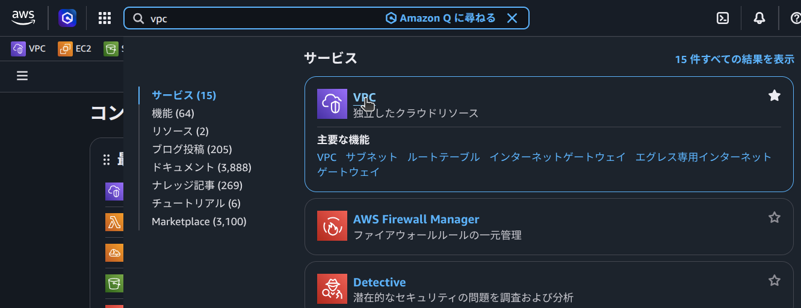

動的サイトを
ECS on Fargate
で
ゼロから公開する
AWSアカウントを作った直後の状態から、独自ドメインのHTTPSで動くWebアプリ（フロント & API: Next.js (Route Handlers) / DB: PostgreSQL）を公開するまでを、1つずつ画面を確認しながら進めます。VPC・セキュリティグループ・Route 53・証明書まで、登場するものはすべてこの資料の中で作ります。
記載のない項目はAWSコンソールのデフォルトのままでOKです。
全体像 — Webページが開くまで
手を動かす前に、これから作るものの全体像を掴みます。
ブラウザに
https://example.com
と打ってからページが表示されるまで、
裏では次のことが起きています。

-
名前解決 — ブラウザは
Route 53 に「example.com のIPアドレスは？」と聞き、
ALBの住所を得る -
HTTPS接続 — Internet
Gateway を通ってALBへ。
ALBが証明書(ACM)を使って暗号化通信を受け付ける -
画面 & API —
ALBがNext.jsコンテナ(ポート3000)に転送。
ページ表示も、ページ内のJSが叩く/api/...も、
同じコンテナのRoute Handlerが処理する -
データ取得 — Route
HandlerがRDS(PostgreSQL)にSQLを投げ、
結果をJSONで返す
登場するサービスと役割
環境準備
つまずかないための土台を最初に固めます。
リージョンは全編 ap-northeast-1（東京）に統一。
画面右上のリージョン表示を毎回確認する癖をつけてください。
用意するもの
NAT Gateway 約$1.1/日 + RDS(db.t4g.micro) 約$0.4/日 + ALB 約$0.6/日 + Fargate 約$0.9/日
≒ 1日あたり$3前後。
※free-tierで新規登録6ヶ月以内であれば$200のクレジットで実質無料です。
学習が終わったら10章の手順で必ず削除してください。
VPC — ネットワークの土台
VPCは「AWS内に借りる自分専用の区画」。
この中をインターネットから届く区画（パブリック）と届かない区画（プライベート）に分けます。
インターネットゲートウェイ経由で外と直接通信できる。
外から直接届かない。
外向き通信は基本NAT経由（S3宛てのみS3ゲートウェイエンドポイント経由）。
アプリやDBを直接インターネットに晒さない構成が、すべてのAWS設計の基本形です。
手順 — 「VPCなど」ウィザードで一括作成
名前タグに
handson。

.png)
.png)
.png)
.png)
.png)
.png)
・サブネット4つ（パブリック2+プライベート2）
・ルートテーブル（サブネットごとの通信経路）
・インターネットゲートウェイ（VPCとインターネットの出入口）
・NATゲートウェイ（プライベートからインターネットに出る中継）
・S3ゲートウェイエンドポイント（AWS内部からS3にアクセスする経路）。
この図が2章の内容そのものです。
数日空ける場合は10章を参考に一旦削除を。
セキュリティグループ設計
セキュリティグループ(SG)はリソースごとの防火扉。
「どこから・どのポートに入ってよいか」を決めます。
今回は3枚の扉を鎖のようにつなぎます。
全世界(0.0.0.0/0)から許可
alb-sgから来た通信のみ許可
app-sgから来た通信のみ許可
「ALBを通った通信だけがアプリに届き、アプリを通った通信だけがDBに届く」一方通行の鎖を作ります。
手順 — 3つのSGを順に作成
alb-sg、VPCは2章で作った
handson-vpc
を選択。インバウンドルールに HTTPS(443)・HTTP(80)、ソース
Anywhere-IPv4(0.0.0.0/0) を追加して作成。
.png)
.png)
.png)
.png)
.png)
.png)
.png)
.png)
app-sg
を作成。インバウンドは カスタムTCP 3000 、ソースは「カスタム」で検索欄に
alb-sg
と入れてSGを選択して作成。
.png)
db-sg
を作成。インバウンドは PostgreSQL(5432) 、ソースに
app-sg
と入れてSGを選択して作成。
.png)
例としてdb-sg を選択しインバウンドルールを開くと、ソース欄に app-sg のID(sg-xxxx)が入っています。
これが「SG参照」——ソースをIPアドレスではなく別のSGで指定する仕組みで、app-sgが付いたリソース（ECSタスク）からの通信だけを通します。ALBやECSのIPが変わっても設定を直す必要がありません。
.png)
.png)
RDS — PostgreSQL を立てる
DBサーバーを自分でインストール・運用する代わりに、AWSのマネージドDB「RDS」を使います。
プライベートサブネットに置き、外からは一切届かない構成にします。
EC2に自分でPostgreSQLを入れる運用と比べ、手間と事故リスクが大幅に減ります。
手順 — DBインスタンス作成
データベース作成方法は「フル設定」を選択。
テンプレートは「無料利用枠」
.png)
.png)
.png)
識別子はhandson-db
.png)
.png)
（micro以外の表示なら、テンプレートが「無料利用枠」になっていない可能性）
.png)
.png)
.png)
.png)
.png)
ステータスが「作成中」→「利用可能」になるまで5〜10分待つ。
完了したら「接続の詳細の表示」から
マスターユーザー、パスワード、エンドポイントをコピーして控える。
.png)
.png)
.png)
セルフマネージドのパスワードはRDSが保管してくれるものではなく、この画面で確認できるのは今だけ
（再表示不可。忘れるとパスワードリセット＝再起動が必要になる）。
控えたら、その場でアプリが使う接続URL（パスワードとエンドポイントを埋め込んだもの）をParameter Storeに登録する。
.png)
aws ssm put-parameter \
--name "/handson/db/url" \
--value "postgresql://appuser:<控えたマスターパスワード>@<控えたエンドポイント>:5432/appdb" \
--type SecureString{"Version": 1, "Tier": "Standard"}
のようなJSONが返り、
/handson/db/url
という名前でSecureString（暗号化済み）のパラメータが登録される。中身はパラメータストアの画面（5章）で確認可能（値は「表示」を押すまでマスクされる）。
.png)
.png)
.png)
現状ではパブリックアクセスなし + db-sgの制限により、どこからも接続できません。
7章でECSタスク(app-sg)が動き始めて、初めて接続できるようになります。
パラメータストアで秘密情報管理
DBのパスワードをコードや設定ファイルに直書きしないのが実務の鉄則。
接続URLは4章でCloudShellからSystems
Managerの「パラメータストア」に登録済み。
この章では登録内容をコンソールで確認し、SecureStringの仕組みを理解します。値は7章でECSタスクに環境変数として注入します。
コードに書くとGitに残り漏洩します。
無料で使え、暗号化(SecureString)もできます。
ローテーション自動化まで必要になったら有償のSecrets Managerへ。
手順 — 4章で登録した接続URLを確認する
.png)
.png)
.png)
値は「表示」を押すまでマスクされる。表示して、パスワードとエンドポイントを正しく埋め込めているか確認する。
.png)
タイプは「SecureString」で、値は暗号化されて隠されます。
ECR — イメージ置き場
手元でビルドしたイメージをAWSに置きます。
ECSは実行時にここからイメージを取得します。
同一リージョン内のECSからの取得が速く、IAMで取得権限を制御できます。
手順
handson-app
を1つ作成。
.png)
.png)
.png)
.png)
.png)
.png)
参考（公式）: インストール（OS別） / aws configure（クイックスタート）
.png)
.png)
v1
タグのイメージが表示されます。ECS — クラスターとタスク定義
ECSの登場人物は3つ。
・クラスター（入れ物）
・タスク定義（コンテナの設計図）
・サービス（設計図どおりに常時N個動かし続ける仕組み・8章で作成）
Fargateを選ぶと、下で動くサーバーの管理が不要になります。
サーバー管理ゼロ・課金はタスクが使った vCPU・メモリ分だけでスケールも自動。
EC2を選ぶのは「GPUが必要」「特殊なインスタンスタイプを使いたい」など明確な理由があるときだけ。
手順 1 — クラスター作成
handson-cluster、インフラは「AWS Fargate」のみチェックで作成。
.png)
.png)
.png)
.png)
.png)
.png)
手順 2 — タスク定義
handson-app:v1
docker run
のオプション一式を、あらかじめ名前を付けて登録しておくイメージ。一度作ったら変更はできず、修正するとリビジョン（:1, :2, …）として新しい版が積み上がるのが特徴です。デプロイのやり直し・切り戻しはリビジョンを切り替えるだけ。
handson-app
起動タイプ FargateCPU 0.25 vCPU
メモリ 0.5GB
タスク実行ロールは「新しいロールの作成」。
.png)
.png)
.png)
メモリ .5GB
.png)
タスク実行ロール = ECS自身がタスクを起動するための権限（ECRからのpull、パラメータストアの読み取りなど）。
タスクロール = アプリのコードからAWSを呼ぶ時の権限（今回は不要）。
混同しやすいので注意。
.png)
.png)
.png)
.png)
.png)
.png)
.png)
appイメージURI
ECRイメージを閲覧からイメージを選択コンテナポート 3000
.png)
process.env.DATABASE_URL
に、起動時に値が入ります。コードに秘密が書かれないセキュアな仕組みの完成。
環境変数を追加。
・キー：DATABASE_URL
・値のタイプ：VALUEFrom
・値：/handson/db/url
.png)
.png)
まだコンテナは動いていません（設計図を書いただけ）。
動かすのは8章の「サービス」です。
.png)
ALB & サービス起動
いよいよ動かします。
ALB（玄関）を立ててNext.jsコンテナへ転送する設定を行い、ECSでコンテナを常駐させます。
手順 1 — ターゲットグループを作成
ターゲットグループ名：
app-tgプロトコルHTTP：3000
VPC：handson-vpc
ヘルスチェックパス：
/api/health上記設定で次へ。
.png)
.png)
.png)
.png)
ポート：3000
.png)
.png)
.png)
.png)
.png)
.png)
.png)
.png)
手順 2 — ALB作成
handson-alb「インターネット向け」
VPC：handson-vpc
マッピング：パブリックサブネット2つを選択
SG：
alb-sgリスナー HTTP:80 の転送先に
app-tg
を指定して作成。※画面も
/api/*
も同じコンテナが処理するため、パスルーティングのルール追加は不要。
.png)
.png)
.png)
.png)
.png)
.png)
1a, 1cともに☑
publicが選択されていることを確認
.png)
デフォルトは削除
.png)
※リスナーは HTTP:80のまま。
ブラウザ→ALBは80、ALB→コンテナは3000に流す。
.png)
.png)
.png)
.png)
手順 3 — ECSサービスを起動
起動には「サービス」を使います。単発の「タスクを実行」だと落ちたら終わりだからです。
サービスは常駐Webアプリ用の仕組みで、
①指定した数のタスクを常に維持（落ちたら自動で再起動）
②タスクのIPをターゲットグループに自動登録
をやってくれます。
handson-app、サービス名
app-svc、必要なタスク数
1。ネットワーキング：プライベートサブネット2つ・SGは
app-sg・パブリックIPはオフ。ロードバランシングでALB → リスナー80:HTTP →
app-tg
を選択して作成。
.png)
.png)
.png)
.png)
.png)
※外から直接コンテナに入れないようにするため
.png)
.png)
.png)
.png)
.png)
.png)
.png)
.png)
.png)
動作確認
EC2 > ロードバランサー > handson-alb > DNS名をコピー.png)
.png)
ブラウザにページが出れば、①〜④の流れ（ALB→Next.js(Route Handlers)→RDS）がすべて貫通しています。
エラーの場合はサービスの「イベント」タブとタスクの「ログ」タブを見るのが定石（10章）。
Route 53 & HTTPS 化
仕上げです。
ALBの長いDNS名を自分のドメインに置き換え、ACMの証明書でHTTPSにします。
ドメイン代（.comで年約$14〜）だけは実費がかかります。
手順 1 — ドメイン取得
既にお名前.com等で持っている場合はそのドメインのNSをRoute 53のホストゾーンに向ければ同じことができます。
これがこのドメインの住所録本体。
手順 2 — ACMで証明書を発行
ALBとセットで使うのが定番。
example.com）、検証方法「DNS検証」でリクエスト。
数分でステータスが「発行済み」になる。
手順 3 — HTTPSリスナーとAレコード
app-tg
へ転送。
https://自分のドメイン
でページが開き、アドレスバーに鍵マークが付きます。http で開いても自動で https に転送されます。
これで0章の図の全要素が完成です。
運用の基本と片付け
「動いた後」に毎日使う3つの操作と、課金を止める削除手順です。
日常の3操作
コンテナの標準出力がそのままCloudWatch Logsに流れています。
エラー調査はまずここ。
:v2
をpush →
タスク定義の「新しいリビジョンの作成」でタグを差し替え →
サービスの「更新」で新リビジョンを選択。旧タスクと入れ替わるローリング更新が走ります。
さらに「Auto Scaling」でCPU使用率に応じた自動増減も設定できます。
片付け（課金を止める順番）
上から順に消してください。
- ECSサービス（タスク数を0に更新 → 削除）→ クラスター削除
- ALB削除 → ターゲットグループ削除
- RDSインスタンス削除（最終スナップショット不要にチェック）
- NAT Gateway削除 → 解放されたElastic IPも解放
- VPC削除（サブネット等も一括で消える）
- ECRリポジトリ削除（イメージごと）
- パラメータストアの4つ、CloudWatchロググループを削除
- Route 53：Aレコード削除。ドメイン自体は年額課金なので更新設定を確認（自動更新オフに）
おつかれさまでした。